67
TRIMMINGS
装饰物

MEN wear ties and collars. Ladies wear ornaments and trimmings. Buildings wear trimmings, too, to keep them from looking too plain and unfinished. These trimmings on buildings we call moldings and borders. The Greek and Roman builders used moldings and borders of certain shapes and designs, and builders nowadays use many of the same moldings and borders.
Perhaps you have never examined closely the panels of a door, the edges of a doorway or window, the picture molding under the ceiling, or other trimmings around the outside of a building, but if you should notice them you may be surprised to see that most of them are not just flat strips. They have different shapes. The different shapes of these moldings have names just as the boys and girls you know have names, so you can become acquainted with them.
I’ll introduce them to you:
There is a molding that is square as seen from the edge, and so simple that you might think a name unnecessary. It is called a fillet , which means a ribbon or band. In olden times women —and men, too—wore a fillet around their heads, to keep their hair in place and as an ornament. Nowadays, buildings often wear fillets just as an ornament. A fillet, as seen from the edge, is like the drawing at the left.
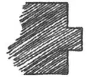
No.67-1
When a fillet is sunken in, like a square groove, it is called simply asunken fillet . It is like this drawing on the right.
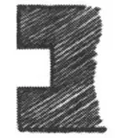
No.67-2
Here is a molding that is half round as seen from the edge. Architects call it a torus , but to carpenters it is a “half-round.”
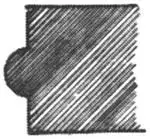
No-67-3
Here is the torus, or half-round, sunk in, forming a round hollow or groove. Its right name is cavctto , which means a little cave, but carpenters call it a groove.
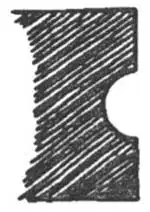
No.67-4
Here is a molding that, seen from the edge, looks like the curve of an egg. It is called by architects an ovolo , which means egg-shaped, but carpenters just say “egg molding.”
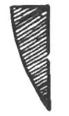
No.67-5
Here is a molding that is hollowed out with the same egg shaped curve. It is called a scotia .
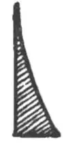
No.67-6
Here is a molding with a curve like an S. The hollow is at the bottom. It is called an ogee —just like the ex-clamation “Oh gee”! The ruler you use in school may be in the shape of ogee molding.
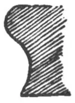
No.67-7
Here is a molding also with an S curve, the hollow at the top. It is called acyma
, which means a wave.
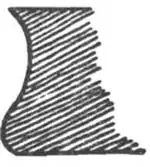
No.67-8
Do you think you can recognize these moldings when you see them and call them by name? They are in couples—four couples. One is raised and one is hollow; one fits into the other.
Mr. and Mrs. Fillet
Mr. Torus and Miss Cavetto
Mr. Ovolo and Miss Scotia
Mr. Ogee and Miss Cyma
Usually, instead of just one simple molding, two or more of these moldings are used, one alongside the other and there are several beautiful moldings made by such combinations.
In most of the combinations, the square fillet is used between the curved moldings. This arrangement of square and curve makes the curved moldings stand out more sharply, thus:
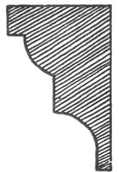
No.67-9
See how many of these moldings you can find in your own house or in some one else’s house.
There are also several kinds of borders. The simplest is the zigzag, which is also called the chevron because it is like the chevron that a soldier wears on his sleeve. It’s something like the first writing a child tries to do.
The next simplest is the scallop . It is called that because it is like the edge of the scallop shell. It’s like this:
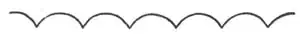
No.67-11
or upside down like this:
No.67-12
The embattled is like this:
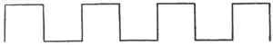
No.67-13
The embattled border is sometimes called the Wall of Troy, because Troy had a wall around it, with spaces through which the soldiers could shoot their arrows, and pieces of wall behind which they could jump.
The meander is like this:
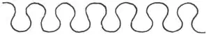
No.67-14
The Meander was a river in Asia Minor that flowed in this very crooked way. If you go to school walking in a line that makes a design like this, we say you are meandering.
The fret or key is like this:
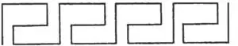
No.67-15
It looks something like a row of keys.
The dentil is like this:
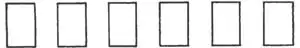
No.67-16
because “dentil” means teeth and it was supposed to look like a row of teeth. It looks something like a row of piano keys, too.
The wave is like this, something like an S lying down with a curl or scroll in one end. Of course you can see why it is called this if you have ever seen waves breaking on the shore. When I was a boy I used to make my capital S ’s with many scrolls in each end until my teacher made me stop.
The running scroll is like this:
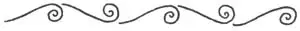
No.67-18
—one wave up and one down. This is one of the prettiest borders.
The astragal is like this:
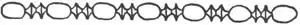
No.67-19
Astragals were really little bones, but the astragal border looks to me like a string of beads—long beads with two round beads between them
The chain is like this:
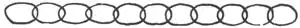
No.67-20
—not a very pretty border, do you think so?
The cable or rope is like this:
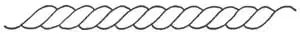
No.67-21
The egg and dart is like this:
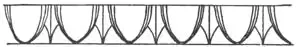
No.67-22
The egg was supposed to represent birth; the dart, death—birth and death, birth and death. Every man is born and dies. His son is born and dies. Generation after generation is born and dies, forever and ever. The astragal was always used below the egg and dart border.
The Lesbian leaf is like this:
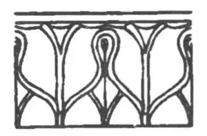
No.67-23
The anthemion is like this:
—leaves arranged in a heart shape.
The Greek lily is like this:
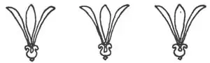
No.67-25
The anthemion was often used with the Greek lily alternating.
These are called classic borders because the Greeks and Romans used them and anything Greek and Roman we call classic.
The next time you draw or mount a picture, suppose you try making a border for it of one of these classic designs. It’s fun. I’ve known boys to make such borders round the letters they wrote, round Christmas cards and even round their arithmetic papers, and some girls have embroidered handkerchiefs and towels with these designs, but they have to be done very carefully to look just right—one part exactly like every other, evenly spaced and in line.
【中文阅读】
男人们穿西服，打领带。女士们佩戴首饰和装饰品。建筑物也佩戴装饰物，以避免单调和粗糙的状况。我们把建筑物上的装饰物叫做“线条”和“边饰”。罗马和希腊的建造者用各式各样的线条或边饰，而当今的建造者也用几乎相同的线条和边饰。
也许你从来没有仔细观察过门板、过道或窗户的边缘，天花板下图画的线条，或建筑物外围的其他边饰，但如果仔细观察的话，你将会大吃一惊，因为这些边饰都不是单调的线条，而是形状各异的。这些形态各不相同的线条还有不同的名称，就跟你知道的那些男孩女孩各有不同的名字一样，以便你能认识它们。
让我来一一介绍吧：
这样一种线条，从边缘看它是方的，简单到你认为根本就没必要给它命名。它被称作“平边”（图67-1），也就是丝带或带子的意思。在古代，男人和女人们在他们的头上都戴着一条头带，一来保持发型，二来作为装饰。如今，建筑物也戴上了平边。平边从边缘上看就像左边的图。
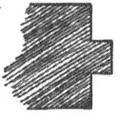
图67-1
如果平边的一侧往里陷，像一个方形的槽，就直接叫做凹平边。如 （图67-2）所示。
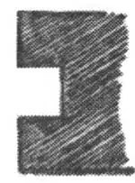
图67-2
还有一种线条，从边缘上看呈半圆形。建筑师称它“环状半圆线条”，但对木匠来说它就是“半圆形”。（图67-3）
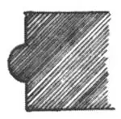
图67-3
如果这个环状半圆线条，或半圆形，往里陷，就形成一个圆形空洞或槽子。它的正确名称是“凹弧饰”，意为小洞穴，但木匠就叫它凹槽。（图67-4）
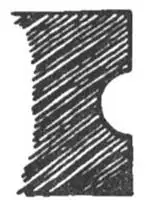
图67-4
如果一种线条，从边缘上看，像一个鸡蛋的曲线，就被建筑师称作“圆凸形线条”，意为鸡蛋形状的，但木匠们直接称它“鸡蛋线条”。（图67-5）
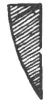
图67-5
还有一种线条，它的中心被挖空了，挖成鸡蛋形状的曲线。它被称作“凹弧边饰”。（图67-6）
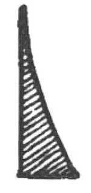
图67-6
如果一种线条的曲线看起来像是S形，底部是空心的，它就被称作“双弯曲线”——就像“哦，天哪”这样的感叹！你在学校用的尺子就有这种双弯曲线的线条。（图67-7）
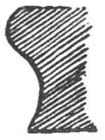
图67-7
还有一种线条也具有S形状，但顶端是空心的。它被称作“反曲线”，意思是“像浪花一样”。（图67-8）
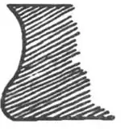
图67-8
当你看到这些线条时你能够认出它们并说出它们的名字吗？它们都是一对一对的——总共有四对。一个是实心的，一个是空心的；另外两个彼此互补。
平边先生和平边夫人
环状半圆线条先生和凹弧饰小姐
圆凸形线条先生和凹弧边饰小姐
双弯曲线先生和反曲线小姐
通常情况下，会采用两种或更多的线条，而不仅仅是某种单一的线条，用一种线条环绕另一种线条，把这些线条混合在一起就形成了多种美丽的图案。
在大多数混合图案中，方形平边被镶嵌在曲线线条中（图67-9）。这种方圆搭配使曲线线条更显突出。
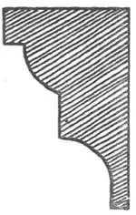
图67-9
在自己家中或别人家中看看能找到多少种像这样的线条。
边饰也有好几种。最简单的就是锯齿形，也称“波浪饰”（图67-10），因为它很像士兵衣袖上的山形袖章，也有点像小孩第一笔涂鸦。
下一个简单的边饰是“扇贝形边饰”。之所以这么叫它是因为它的边缘看起来像 扇贝。就像这样（图67-11）：
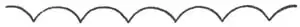
或者颠倒过来，就像这样（图67-12）：
像这样的就叫做“雉堞边饰”（图67-13）：
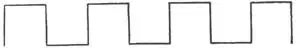
雉堞边饰有时候也被称作“特洛伊墙”，因为特洛伊有围墙环绕，墙上留有空隙，士兵们可以射箭，城墙后面的断壁残垣还能让他们纵身跳下。
“回纹波形饰”像这样（图67-14）：
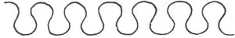
迈安德河是小亚细亚的一条蜿蜒曲折的河流。如果你在上学路上就这么走的话，我们就会说你在曲折前行。
“回纹饰”或“键形边饰”像这样（图67-15）：
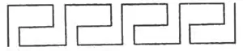
它看起来像一排按键。
“齿饰”像这样（图67-16）：
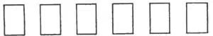
因为齿饰意味着与牙齿有关，而它看起来也像一排牙齿。它看起来也像一排钢琴键。
“波浪饰”是这样的（图67-17），像一排S横卧在一起，结尾处有小卷或卷轴。当然如果你曾看过海浪拍打着海岸的话，你就会知道为什么这样命名它。我小时候，就常常用卷轴画大写S，一个顶一个，直到老师叫我停下。
“滚动涡卷饰”像这样（图67-18）：
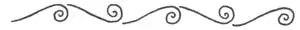
——一个浪头朝上卷来，一个浪头又向下拍去。这是最好看的边饰之一。
“串珠饰”像这样（图67-19）：
串珠饰实际上就是小骨头，但串珠形边饰在我看来就像是一串珠子——每两个长珠子之间镶嵌着两个小圆珠。
“链条饰”像这样（图67-20）：
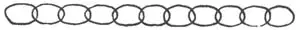
——这个边饰不太好看，你觉得呢？
“缆绳饰”或“绳索饰”像这样（图67-21）：
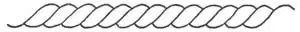
“卵镖饰”像这样（图67-22）：
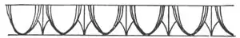
卵代表出生；镖象征死亡——生生死死，死死生生。人人都经历生和死。儿子出生，又去世。一代人去世，又一代人出生，世代循环，永远如此。
“莱斯波斯岛树叶饰”像这样（图67-23）：
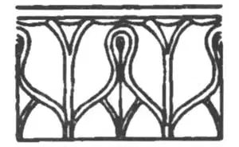
“粽叶饰”像这样（图67-24）：
——树叶被安置在心形里。
“希腊莲花饰”是这样的（图67-25）：
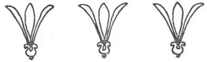
粽叶饰常常与希腊莲花图案交叉搭配。
以上这些都被称作经典边饰，因为希腊人和罗马人都使用这种边饰，而凡是希腊和罗马的，我们都称之为经典。
当你下次画画或装裱时，你可以试着用其中一款经典花样来镶边。这非常有趣。我知道有些男孩在写信的时候会在信纸上镶边，在他们的圣诞贺卡上镶边，甚至在他们的算术本上镶边，而有些女孩喜欢使用绣有这些花样的手帕和毛巾。但这些活儿做起来必须小心翼翼才好——因为每一部分看起来必须和另一部分一模一样，即便是其中的空隙和线条也必须一模一样。